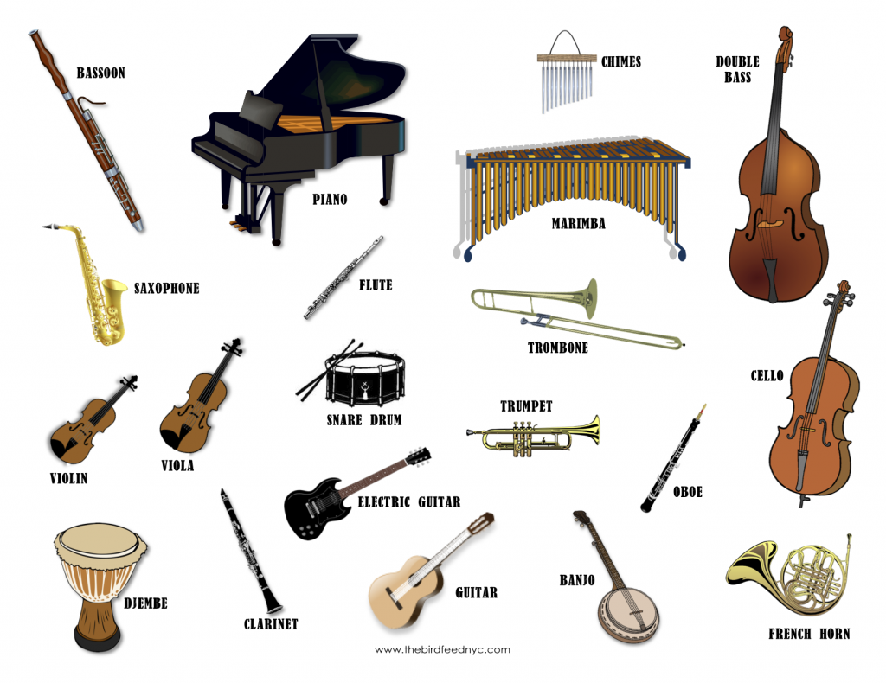

Instruments and Singing
Many people all around the world play an instrument or sing. Types of instruments include pianos, violins, violas, cellos, the french horn, flutes, guitars, trumpets, saxophones, clarinets, xylophones, drums, and more. Although signing requires just yourself, it is good to learn the basics of singing.
